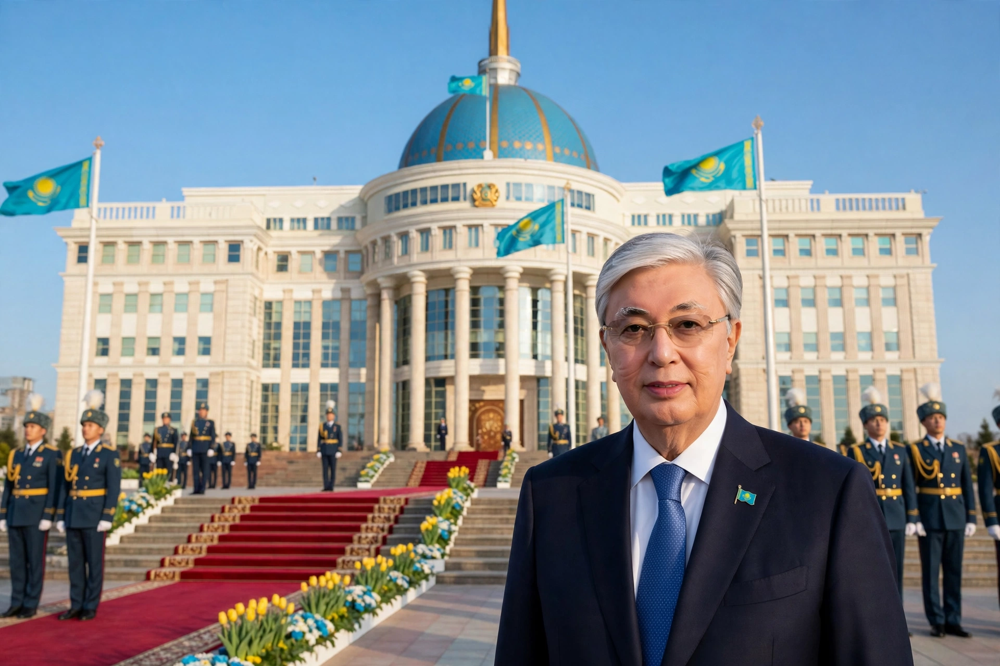

Incumbent: Kassym-Jomart Tokayev (since 20 March 2019)
Residence: Ak Orda Palace, Astana
Term: Single seven-year term (since 2022 reform)
The President of Kazakhstan is the head of state and commander-in-chief of Kazakhstan, holding wide executive powers in a strongly presidential system.
The office was established in 1990 within the Kazakh Soviet Socialist Republic. Nursultan Nazarbayev, its first holder, led independent Kazakhstan from 1991 until his resignation in March 2019, accumulating the honorific 'Leader of the Nation'. He was succeeded by Kassym-Jomart Tokayev, confirmed in the June 2019 election.
The president appoints the prime minister and government, can dissolve parliament under set conditions, and directs foreign and security policy. Following the 2022 unrest and referendum, the constitution was amended to a single seven-year term, and Tokayev won re-election in November 2022.